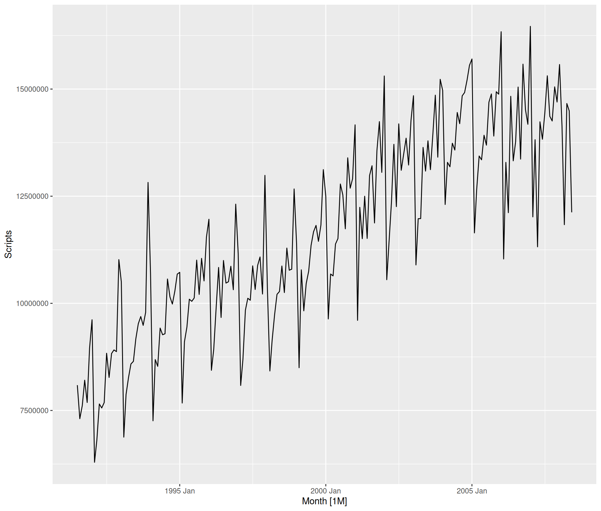
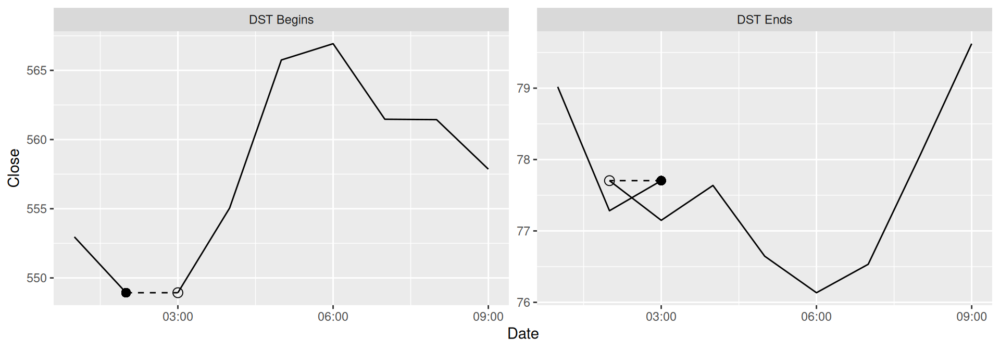
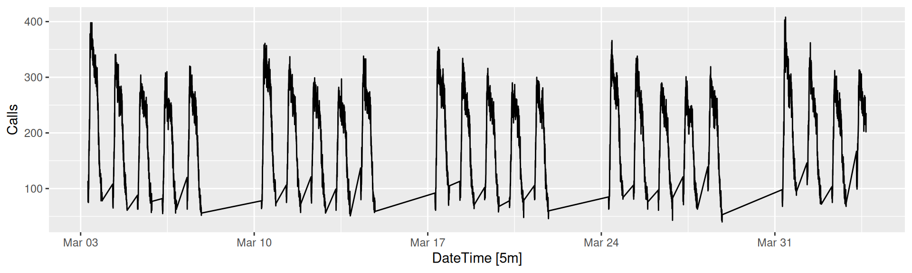
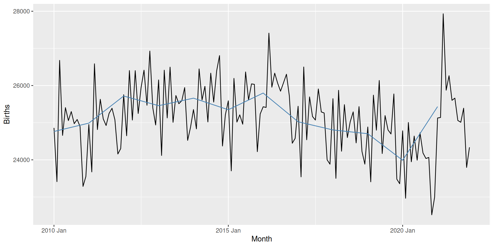
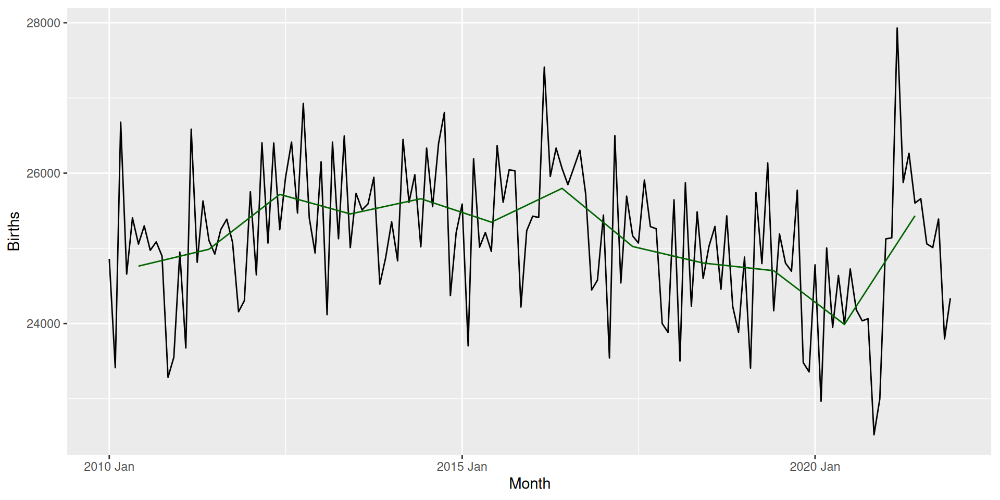
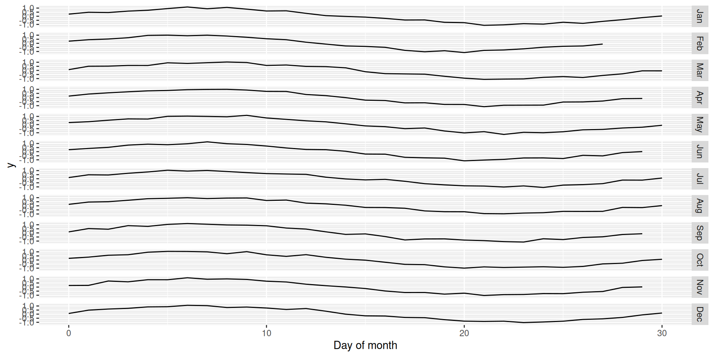
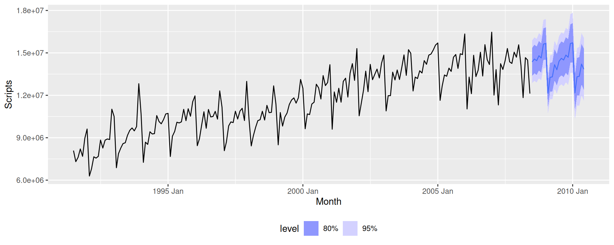
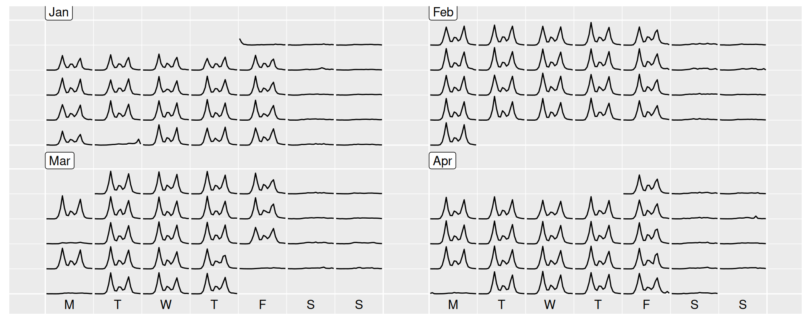
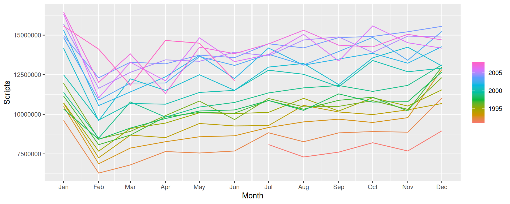

Code

Designing ggtime:
A grammar of temporal graphics
12th February 2025 @ ggextenders club
Mitchell O’Hara-Wild, Monash University Cynthia Huang, Monash University

Several types of data require unique care.
{distributional} / {ggdist}){tidygraph} / {ggraph}){sf} / {ggplot2}){mixtime} / {ggtime})What makes these dimensions “special”?
An open question! Some ideas:
Temporal data/patterns align with calendars.
These ‘visual idioms’ of time series plots can be categorised into several groups:
A grammar of temporal graphics
{ggtime} aims to re-express these time series plots with common elements of a grammar.
Those elements can be further remixed to create other useful temporal visualisations.
These show time as a continuous dimension.
Transforms time to reveal circular patterns.
Recall the geom_time_line() example handling jumps in time from daylight savings.

This is an alignment of timezone changes (also known as civil or local time).
What about other jumps, e.g. working hours?


{ggtime} will also align granularities.
Imagine Australian births (annual) compared with total births by state (monthly).

{ggtime} center aligns granularities.

{ggtime} could also align cycles.
Cycles are repeating patterns with an irregular duration (and shape).

Warping cycles to have the same length as “% of cycle” can help compare cycle shapes.

Facets separate each day (or calendar period).

My current design for coord_calendar() is to rearrange an inner coordinate system.
This creates a nested or hierarchical coordinate system – interesting!
There are some implementation challenges which could prevent this idea working:
Where should temporal wrapping exist?
coord_wrapped()
coord_calendar(), but without the calendar layout.coord_sf()Leveraging calendar structures, ggtime adds
These elements can be combined to produce familiar plots, or remixed to create more bespoke temporal visualisations.
Example: time plot (and forecast plot)


Example: calendar plots

Example: seasonal plots

Continue the discussions on GitHub!
I’ve created a ggtime discussion thread here: discussions#79
There are reply threads for each discussed topic:
I appreciate your contributions!